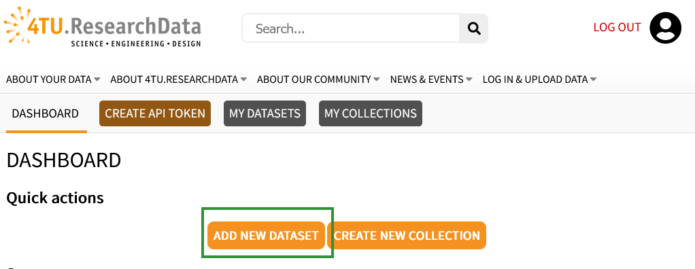

This post contains general information about the data repository 4TU.ResearchData and how to share your research data/code.
4TU.ResearchData is the archive of the 4TU.ResearchData Consortium (Delft/Wageningen/Eindhoven/Twente) and Groningen University.
Free up to 1TB/TU Delft researcher/year
Publication and long-term preservation of research data/code
Open access (with embargo and restricted access if necessary)
Provides uploads with DOIs (Digital Object Identifier), which allow for citation - see data citation or software citation for more information.
How to share the data/code?
Gather and organise the research data and/or code. Describe the outputs in your README file.
Use a consistent folder directory and file naming convention for your files
It can be helpful to have a collaborator go over your data/code to see if everything makes sense and check whether they can deploy your software following your documentation, including dependencies information (operating systems, programming languages; interpreters and compilers; packages, libraries, frameworks, or other tools; browsers; databases; web or other online services and resources; file formats, standards and specifications - see Jackson 2018a for more information)
README file: include your contact information (name, affiliation, current email address and your ORCID!) as well as how you would like the output to be cited (the output itself or the associated article). For software you can also use a CITATION.cff file to recommend citation.
Go to 4TU.ResearchData and login with your netID via the ‘LOG IN’ button in the top right corner:
Select ‘ADD NEW DATASET’

Fill out the metadata information fields and select a licence
Ensure a clear title of your dataset so that you can easily find it back if you do not upload and submit your dataset in one go. (For example, if your data/code is part of a publication, you can name the upload ‘dataset/software underlying the publication’[title publication]’.
All the fields marked with a red * are required before you can publish your upload.
Select a license: Everything with CC in front of it is appropriate for data. The software licenses follow below (you may need to scroll).
Add any related references (GitHub/Lab repository, article DOI, other datasets).
Take note of the DOI your dataset receives. You will need this DOI for your Data Availability Statement and your references.
Select keywords that your peers would use to find your type of research/data, or that you have discussed with department/section/project members to increase findability.
Upload the data or code and the README file
Under files, select the ‘file deposit’ for data, and the ’software deposit for code. You can drop and select files or open up the file explorer by clicking on the upload area.
You can either upload directories separately or decide to use an archive file (open formats are: .zip .tar, .tgz, or tar.bz2 - See Jackson 2018b)
Submit the upload for review
When the upload is ready to be published, you can submit it for review by selecting the ‘SUBMIT FOR REVIEW’ button on the top of the upload:
You may receive some feedback from 4TU.ResearchData to improve your submission. After any adjustments and your confirmation, the upload is ready to be published!
Sharing a private link
You can share a private link of a draft dataset with peer reviewers or your thesis committee via 'My datasets', pressing the link button under ’Actions':
You can then select the ‘CREATE NEW PRIVATE LINK’ button.
Have you set up a Data Management Plan? In this Data Management Plan you can think about how you will store, document and share your research.
Ask feedback on how you documented and structured your data and code from someone that is not a co-author: are they able to trace your steps?
Decide in what order you want to publish your research objects: do you want to publicly share the data and code before the article is published or would you rather wait? - see The Turing Way (The Turing Way Community 2022e) for more information on how to link your research objects during the sharing process.
Make sure a README file is included with your data/code: even if there is an associated article it is important to provide all relevant information to interpret the data or use the code in the same place as the data/code. You can also let others know how to cite you in this README file.
Ensure that you selected a license for your data and code: without it your research objects cannot be reused by others.
Provide the DOI of your research objects where it is relevant (for example, table/figure descriptions, materials and methods section, data/code availability statement).
Check whether you cited your data and code in the references: this is where citations are counted from - not the acknowledgements or data availability statements. If you reused any data/software you should also cite these.